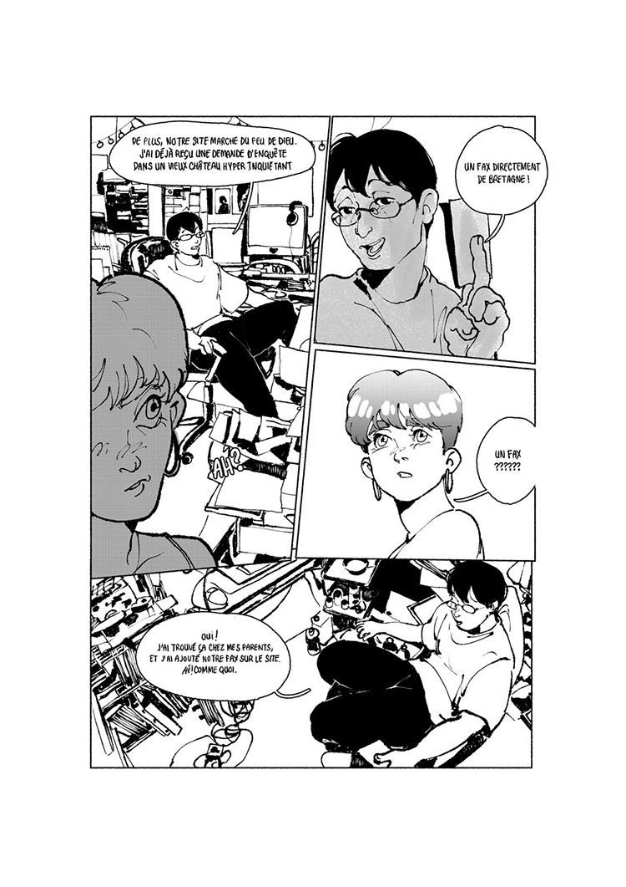
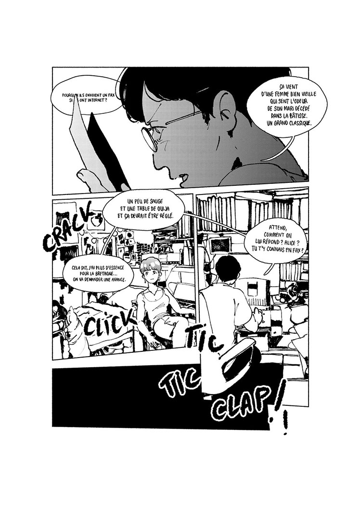
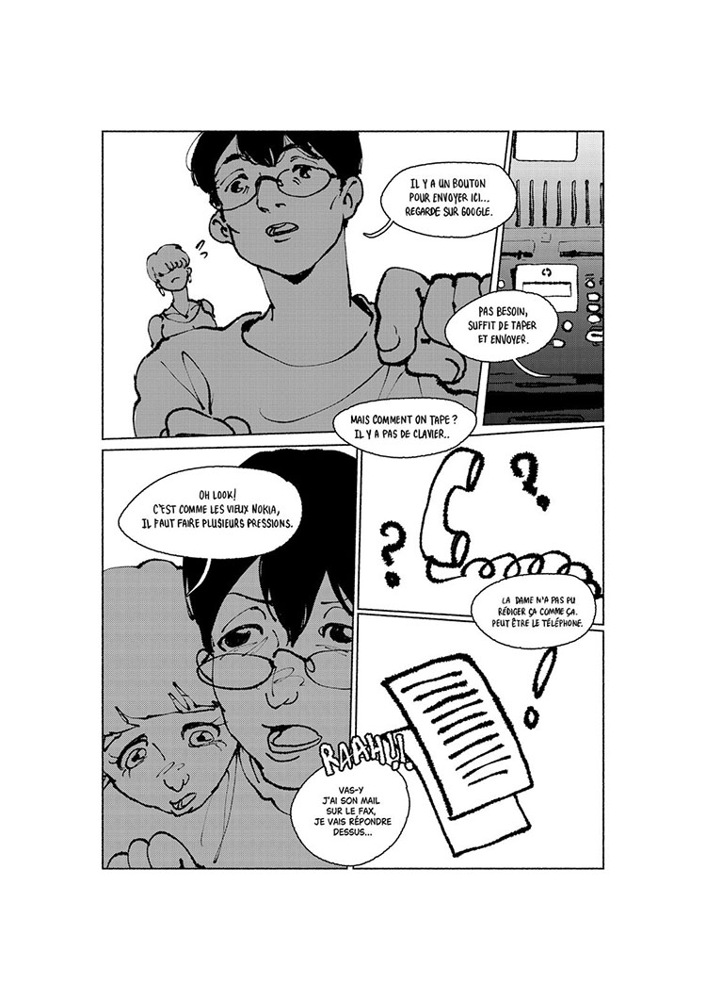

U Like UFO est une première à plusieurs titres : première BD publiée de l’autrice française Mercening et première parution de la nouvelle collection Kopi - spécialisée dans le manga - des éditions Exemplaire. A l’annonce de son financement participatif je n’ai pas longtemps hésité tellement le projet semblait coller à mes petites déviances : le paranormal, les p’tits hommes verts et plus globalement le bizarre. La découverte du compte Instagram de l’autrice, l’enthousiasme de Boulet et les premières planches dévoilant son univers m’ont convaincu de participer.
Le récit commence durement avec le suicide d’un adolescent membre du petit club de paranormal de son lycée. Sous le choc, son amie Alice, en dernière année de lycée, et Oswald, jeune professeur d’anglais, décident malgré tout de continuer le club. Quelques années plus tard, ils ont fondé une entreprise et forment un duo de détectives spécialisés dans les phénomènes paranormaux. Leur objectif : prouver une fois pour toutes l’existence du paranormal. Même si les déceptions s’accumulent, leur détermination semble à toute épreuve et cette obsession sincère dénuée de tout cynisme les rend forcément attachants, mais aussi un peu déconcertants. Comme on parle d’un professeur reconverti et de son ancienne élève, la nature de leur relation pourrait même créer un certain malaise. Ce dernier, heureusement, est rapidement désamorcé (d’une manière que je qualifierais d’à l’image des personnages : surprenante et plutôt rigolote).
Mercening semble avoir pris plaisir à manipuler tous les clichés possibles du paranormal : ovnis, cryptozoologie, esprits frappeurs, planches de ouija, il y en a pour tous les goûts. Un vrai florilège du genre dans toutes ses représentations pop. On imagine assez bien l’autrice écumer tous les recoins des internets (jusqu’aux vieux forums phpBB) à la recherche d’histoires étranges. Là où c’est intéressant et où forcément ça m’a plu, c’est que le sujet est moins abordé par les phénomènes eux-mêmes que par ce qu’Alice et Oswald recherchent ou ressentent à travers eux. Et puis on n’oublie évidemment pas la scène d’introduction : ce suicide choquant, incompréhensible et par conséquent omniprésent.
Influencée par les cultures numériques - elle se définit comme “pur produit de la culture Internet” - et le yaoi, Mercening est aussi très active dans le milieu des fan-fictions (avec notamment une passion pour Frodon et Sam à suivre sur son Insta). Son style de dessin m’a certes parfois dérouté (probablement en raison de mon manque d’habitude des mangas), mais est parfaitement en accord avec le récit et a exercé sur moi comme un pouvoir de fascination.
Je me souviens d’un financement participatif périlleux, peinant de façon incompréhensible à atteindre les 100% malgré l’évidente qualité de ce qui était promis. Je suis bien content que cette BD soit sortie et j’espère que Mercening en publiera d’autres (et puis sinon on ira lire ses fan-fictions).
Sortie : 2025